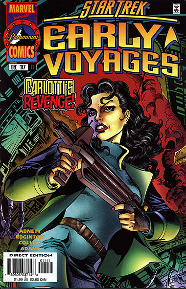
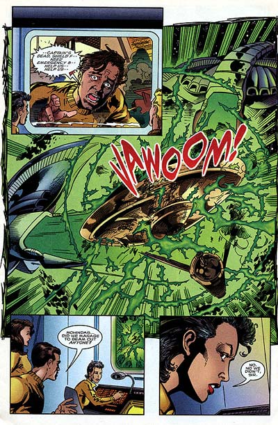

|


|
Gnese
| Episdios I Reflexes
| Palavras do autor | Palavras
do artista Star Trek
Early Voyages, n 11 dezembro de 1997  Histria: Dan Abnett e Ian Edginton Material produzido por Salvador Nogueira para o Trek Brasilis
Data Estelar: desconhecida Sinopse: O grupo mdico de assistncia est atendendo os sobreviventes de Theta Kalyb, enquanto a frota comandada pela Enterprise est enfrentando os Chakuuns. As naves menores no so preo para os federados, mas as naves-fantasma continuam ameaando Pike e seus tripulantes. Enquanto uma batalha ferrenha travada no espao, a enfermeira Carlotti v uma nave se acidentando na superfcie --uma das naves menores Chakuun, com apenas um tripulante, que est inconsciente. Ela se aproxima, e seu primeiro impulso matar um dos monstros responsveis pela morte de seus pais em New Milan, mas ela resiste ao brbara e decide tratar o aliengena ferido. Ao abrir o capacete, Carlotti fica chocada ao descobrir que o rosto dos Chakuuns bastante similar ao humano e que aquele especificamente era uma mulher. A Chakuun recupera a conscincia, mas no entende por qu aquela humana a est tratando, em vez de mat-la. As duas travam um intenso dilogo, em que a Chakuun explica a poltica territorial Tholiana, baseada nas modificaes constantes que acontecem no espao, exigindo que as fronteiras sejam refeitas. Com essas modificaes, algumas colnias humanas acabam indo parar dentro do territrio Tholiano, que manda suas tropas Chakuuns para "limpar" seus domnios. Embora Carlotti esteja revoltada pelas aes e filosofia Chakuuns/Tholianas, ela comea a perceber que h razes e motivaes por trs das atitudes aliengenas --no somente a maldade pura. Ela tambm percebe que no pode interpretar raciocnios aliengenas a partir de uma moral humana --fato que a Chakuun insiste em lembr-la. Em rbita, a batalha est feia. Embora as naves da Frota Estelar estejam aplicando tticas inovadoras, os Chakuuns esto vencendo. A Brazzaville, a Achilles e a Providence foram perdidas, e no h chance de vencer. No planeta, Carlotti e a aliengena so surpreendidas por um destacamento de resgate Chakuun. Neste momento a Chakuun ferida se identifica como a General da Coorte, e decide poupar a vida de Carlotti, em retribuio pela generosidade da humana em poup-la. Ela tambm ordena uma retirada das naves Chakuun, antes que a Enterprise e a Nelson fossem tambm destrudas. As duas naves restantes resgatam as equipes mdicas e os sobreviventes da colnia e partem para uma base estelar em Algol, para reparos. L, Pike e Carlotti passam as informaes recm-adquiridas ao Comando da Frota Estelar e voltam Enterprise, no intuito de seguir viagem.  Comentrios A concluso de "The Fallen" adrenalina pura. Mas, mais que isso, consegue a mescla perfeita entre ao e uma histria inteligente. Vrias pginas so gastas na batalha espacial entre as naves da Frota Estelar e dos Chakuuns, o que poderia facilmente levar a histria a um beco sem sada criativo. Entretanto, as solues e estratgias propostas pelos roteiristas Abnett e Edginton para as batalhas so brilhantes, e desta vez totalmente originais. Em "Cloak & Dagger", a sesso de confronto espacial estava recheada de tticas e solues mostradas em filmes e episdios da Srie Clssica, o que era bom pelo aspecto de nostalgia, mas mostrava alguma fadiga criativa. Aqui, temos duas ou trs passagens memorveis envolvendo novas estratgias de batalha, nunca antes vistas em Jornada nas Estrelas. Pike mostra toda a sua capacidade de comando, e vemos algo indito no franchise: a melhor idia para combater os inimigos no parte da Enterprise, mas de um desconhecido capito da Achilles. Isso serve para dar incrvel realismo e fluidez sequncia. No seria exagero dizer que esta edio contm uma das melhores quadrinizaes de batalha espacial j feita para Jornada nas Estrelas. No planeta, temos a enfermeira Carlotti enfrentando os seus fantasmas do passado, o que d pano para a manga em termos dramticos. Os dilogos entre ela e a Chakuun so fantsticos, e servem no s para desenvolver a personalidade da oficial da Frota como tambm para dar um excelente background sobre os praticamente desconhecidos Tholianos e um interessante elemento de reflexo histria. Todas as explicaes relativas poltica territorial Tholiana parecem extremamente convincentes, e o mrito todo da dupla de roteiristas. Alm disso, a crtica sobre a antropomorfizao da tica e da moral muito mais profunda do que poderia parecer primeira vista. No s algo relativo essa histria, mas a Jornada nas Estrelas como um todo. Como disse a embaixadora Klingon Azetbur em "A Terra Desconhecida", a Frota Estelar um clube privado para Homo sapiens. Ela no est muito longe da verdade, e "The Fallen" tem o mrito de discutir isso abertamente. Brilhante. A concluso da histria, que ata a situao de Carlotti no planeta com o beco sem sada da Enterprise em rbita, tambm funciona perfeitamente. No h a sensao de algo arranjado e concludo convenientemente, mas de algo que realmente casa e faz todo o sentido do mundo. Enfim, mais um grande vencedor da srie, que fez jus ao cliffhanger que havia sido estabelecido na edio anterior.
|